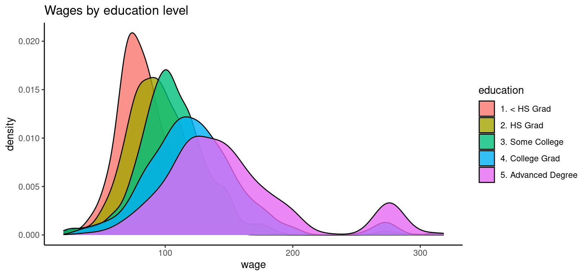

distregvis.RmdThe distreg.vis (Stadlmann 2019) package for R allows us to interactively explore the predicted response distribution using different covariate scenarios.
As a short introduction to distributional regression, we are going to take a look at a dataset on the wage of 3000 male workers in the Mid-Atlantic Region of the US. The dataset is contained in the ISLR (James et al. 2017) package for R. We may output the first 6 rows of the dataset with the following R command:
## year age maritl race education region
## 231655 2006 18 1. Never Married 1. White 1. < HS Grad 2. Middle Atlantic
## 86582 2004 24 1. Never Married 1. White 4. College Grad 2. Middle Atlantic
## 161300 2003 45 2. Married 1. White 3. Some College 2. Middle Atlantic
## 155159 2003 43 2. Married 3. Asian 4. College Grad 2. Middle Atlantic
## 11443 2005 50 4. Divorced 1. White 2. HS Grad 2. Middle Atlantic
## 376662 2008 54 2. Married 1. White 4. College Grad 2. Middle Atlantic
## jobclass health health_ins logwage wage
## 231655 1. Industrial 1. <=Good 2. No 4.318063 75.04315
## 86582 2. Information 2. >=Very Good 2. No 4.255273 70.47602
## 161300 1. Industrial 1. <=Good 1. Yes 4.875061 130.98218
## 155159 2. Information 2. >=Very Good 1. Yes 5.041393 154.68529
## 11443 2. Information 1. <=Good 1. Yes 4.318063 75.04315
## 376662 2. Information 2. >=Very Good 1. Yes 4.845098 127.11574The variable names and factor labels are mostly self-explanatory, but we can look up the details by running ?ISLR::Wage. Our goal is to link wage to a number of relevant explanatory variables. One main driver of wage should be education, so let us start by descriptively investigating the relationship between these two variables. This R code plots the distribution of wage across the different education levels:
library("ggplot2")
ggplot(ISLR::Wage, aes(x = wage, y = ..density.., fill = education)) +
geom_density(alpha = 0.8) +
theme_classic() +
ggtitle("Wages by education level")## Warning: The dot-dot notation (`..density..`) was deprecated in ggplot2 3.4.0.
## ℹ Please use `after_stat(density)` instead.
## This warning is displayed once every 8 hours.
## Call `lifecycle::last_lifecycle_warnings()` to see where this warning was generated.
The graph shows that education does have a big influence on wage. A higher education level shifts the wage distribution to the right, but it also increases the variance and changes the shape of the distribution. One striking feature of the empirical wage distribution is its bump between 250 and 300. There is no explanation for this bump in the dataset or its help page, so we have to assume it is a anomaly of the sample.
When modeling wage, we need to take into account its special characteristics as a random variable: It is positive (or non-negative, but our dataset does not contain any zeros) and its distribution is right-skewed. These characteristics make distributional regression an appropriate tool for the task at hand.
Based on the characteristics of wage, we choose the log-normal distribution for our model. The log-normal distribution has positive support, it is right-skewed, and it has a location parameter \(\mu\) and a scale parameter \(\sigma\). The idea of distributional regression is to link all parameters of the response distribution to explanatory variables. In our case, these will be education, age, race, and year.
The following R code specifies and estimates our model using the LOGNO family of the gamlss.dist package (???):
library("bamlss")
## Get the gamlss families.
library("gamlss.dist")
## Model formula.
f <- list(
wage ~ s(age) + race + year + education,
sigma ~ s(age) + race + year + education
)
## Estimates model using full MCMC.
b <- bamlss(f, data = ISLR::Wage, family = LOGNO)We may take a look at the estimation results with this R command:
summary(b)##
## Call:
## bamlss(formula = f, family = LOGNO, data = ISLR::Wage)
## ---
## Family: LOGNO
## Link function: mu = identity, sigma = log
## *---
## Formula mu:
## ---
## wage ~ s(age) + race + year + education
## -
## Parametric coefficients:
## Mean 2.5% 50% 97.5% parameters
## (Intercept) -19.909954 -30.108357 -19.866270 -10.381230 -20.137
## race2. Black -0.051765 -0.087148 -0.051823 -0.018516 -0.051
## race3. Asian -0.047859 -0.091039 -0.047183 -0.006092 -0.048
## race4. Other -0.066772 -0.162274 -0.066709 0.027615 -0.068
## year 0.012130 0.007358 0.012109 0.017216 0.012
## education2. HS Grad 0.117845 0.080860 0.117468 0.155866 0.118
## education3. Some College 0.237682 0.200591 0.237531 0.276783 0.237
## education4. College Grad 0.351398 0.312607 0.351472 0.391559 0.351
## education5. Advanced Degree 0.517436 0.471827 0.517490 0.560642 0.517
## -
## Acceptance probability:
## Mean 2.5% 50% 97.5%
## alpha 0.9999 0.9997 1.0000 1
## -
## Smooth terms:
## Mean 2.5% 50% 97.5% parameters
## s(age).tau21 0.33509 0.05927 0.22951 1.20845 0.328
## s(age).alpha 1.00000 1.00000 1.00000 1.00000 NA
## s(age).edf 6.01066 4.53129 5.96266 7.62728 6.378
## ---
## Formula sigma:
## ---
## sigma ~ s(age) + race + year + education
## -
## Parametric coefficients:
## Mean 2.5% 50% 97.5% parameters
## (Intercept) 37.270967 14.630197 37.326260 60.188649 37.993
## race2. Black 0.005193 -0.081343 0.006233 0.090754 0.005
## race3. Asian -0.013599 -0.118036 -0.012866 0.088751 -0.015
## race4. Other 0.064204 -0.180577 0.059655 0.308023 0.040
## year -0.019260 -0.030680 -0.019300 -0.007956 -0.020
## education2. HS Grad 0.071944 -0.028430 0.072394 0.165987 0.071
## education3. Some College 0.049722 -0.057854 0.049705 0.145863 0.048
## education4. College Grad 0.198478 0.098632 0.199329 0.304347 0.199
## education5. Advanced Degree 0.260990 0.150081 0.261134 0.367533 0.262
## -
## Acceptance probability:
## Mean 2.5% 50% 97.5%
## alpha 0.9071 0.5681 0.9724 1
## -
## Smooth terms:
## Mean 2.5% 50% 97.5% parameters
## s(age).tau21 2.6202 0.4712 2.0438 7.8435 1.954
## s(age).alpha 0.9132 0.5182 0.9734 1.0000 NA
## s(age).edf 6.2290 4.6743 6.2680 7.5835 6.213
## ---
## Sampler summary:
## -
## DIC = 29013.04 logLik = -14491.5 pd = 30.0486
## runtime = 22.79
## ---
## Optimizer summary:
## -
## AICc = 29013.48 edf = 30.5912 logLik = -14475.82
## logPost = -14637.55 nobs = 3000 runtime = 0.654The output is similar to the summary of a linear model. For each parameter of the response distribution, we get a regression table with slope coefficients, etc. Unfortunately, the coefficients are hard to interpret because they are related to different aspects of the response distribution. Moreover, the scale parameter \(\sigma\) is transformed with a log-link.
One way to understand the meaning of the coefficients is to define different “covariate scenarios” and take a look at the corresponding predicted response distributions. The distreg.vis (Stadlmann 2019) package for R allows us to do so interactively:
Explore the model with distreg.vis
The corresponding R code that starts the app locally is:
distreg.vis::vis()James, Gareth, Daniela Witten, Trevor Hastie, and Rob Tibshirani. 2017. ISLR: Data for an Introduction to Statistical Learning with Applications in R. https://CRAN.R-project.org/package=ISLR.
Stadlmann, Stanislaus. 2019. Distreg.vis: Framework for the Visualization of Distributional Regression Models. https://CRAN.R-project.org/package=distreg.vis.
Umlauf, Nikolaus, Nadja Klein, Achim Zeileis, and Thorsten Simon. 2024. bamlss: Bayesian Additive Models for Location Scale and Shape (and Beyond). https://CRAN.R-project.org/package=bamlss.